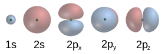

Estructura
Estructura
Partículas subatómicas
A pesar de que átomo significa ‘indivisible’, en realidad está formado por varias partículas subatómicas. El átomo contiene protones, neutrones y electrones, con la excepción del átomo de hidrógeno-1, que no contiene neutrones, y del catión hidrógeno o hidrón, que no contiene electrones. Los protones y neutrones del átomo se denominan nucleones, por formar parte del núcleo atómico.
Un átomo sencillo de oxígeno.
El electrón es la partícula más ligera de las que componen el átomo, con una masa de 9,11 · 10−31 kg. Tiene una carga eléctrica negativa, cuya magnitud se define como la carga eléctrica elemental, y se ignora si posee subestructura, por lo que se considera una partícula elemental. Los protones tienen una masa de 1,672 · 10−27 kg, 1836 veces la del electrón, y una carga positiva opuesta a la de este. Los neutrones tienen una masa de 1,69 · 10−27 kg, 1839 veces la del electrón, y no poseen carga eléctrica. Las masas de ambos nucleones son ligeramente inferiores dentro del núcleo, debido a la energía potencial del mismo, y sus tamaños son similares, con un radio del orden de 8 · 10−16 m o 0,8 femtómetros (fm).
El núcleo atómico
Los protones y neutrones de un átomo se encuentran ligados en el núcleo atómico, en la parte central del mismo. El volumen del núcleo es aproximadamente proporcional al número total de nucleones, el número másico A,12 lo cual es mucho menor que el tamaño del átomo, cuyo radio es del orden de 105 fm o 1 ángstrom (Å). Los nucleones se mantienen unidos mediante la fuerza nuclear, que es mucho más intensa que la fuerza electromagnética a distancias cortas, lo cual permite vencer la repulsión eléctrica entre los protones.13 Los átomos de un mismo elemento tienen el mismo número de protones, que se denomina número atómico y se representa por Z. Los átomos de un elemento dado pueden tener distinto número de neutrones: se dice entonces que son isótopos. Ambos números conjuntamente determinan el nucleido.
Nube de electrones

Los electrones en el átomo son atraídos por los protones a través de la fuerza electromagnética. Esta fuerza los atrapa en un pozo de potencial electrostático alrededor del núcleo, lo que hace necesaria una fuente de energía externa para liberarlos. Cuanto más cerca está un electrón del núcleo, mayor es la fuerza atractiva, y mayor por tanto la energía necesaria para que escape. Los electrones, como otras partículas, presentan simultáneamente propiedades de partícula puntual y de onda, y tienden a formar un cierto tipo de onda estacionaria alrededor del núcleo, en reposo respecto de este.